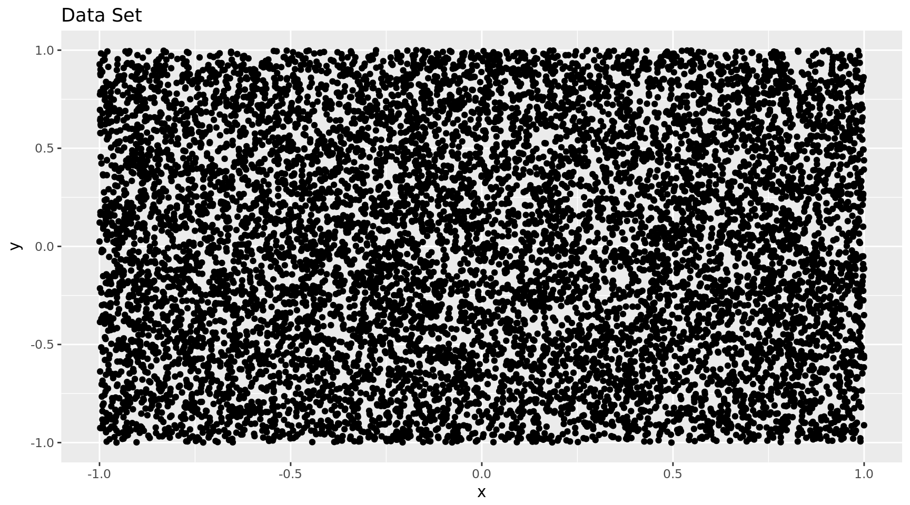
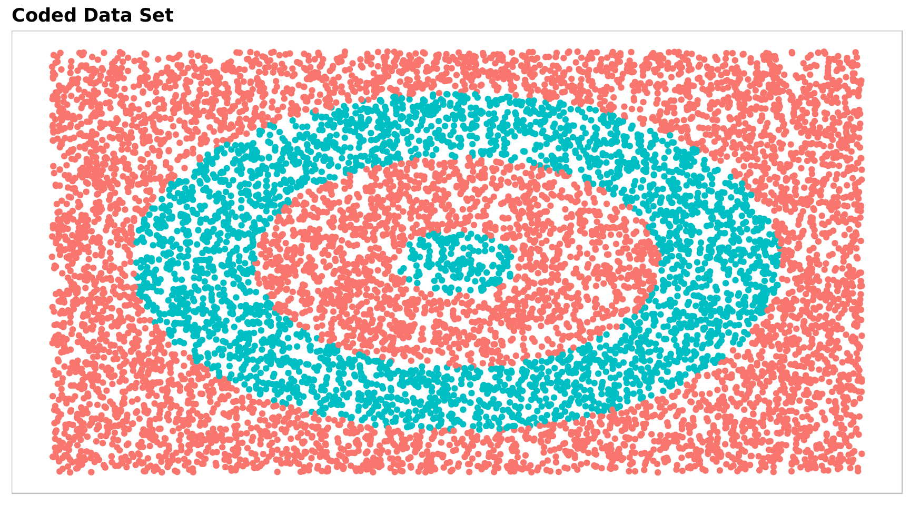
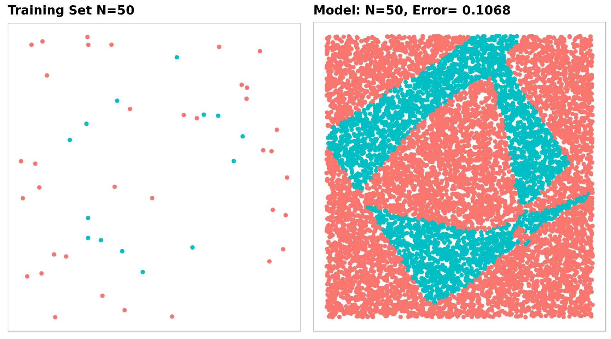
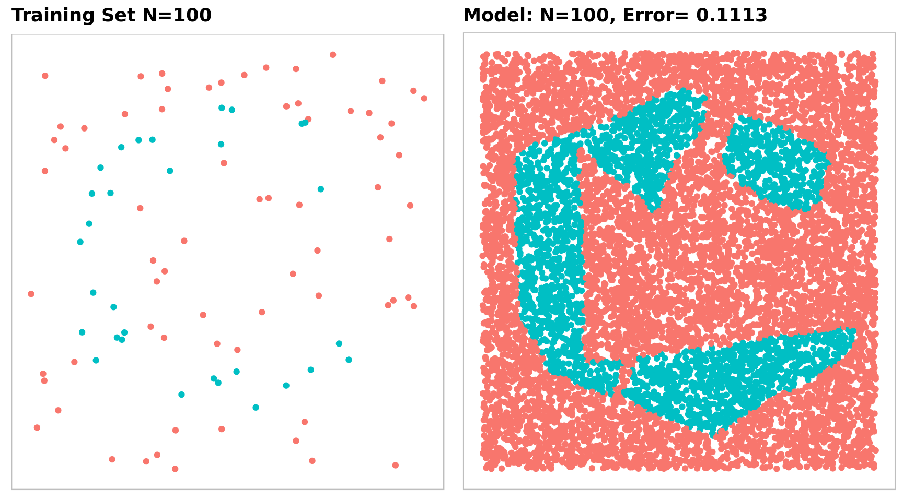
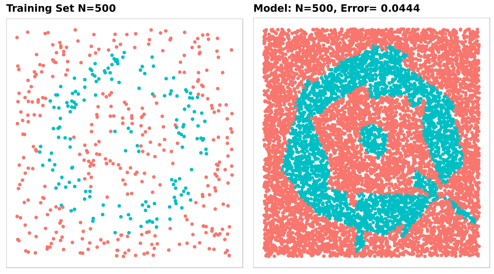
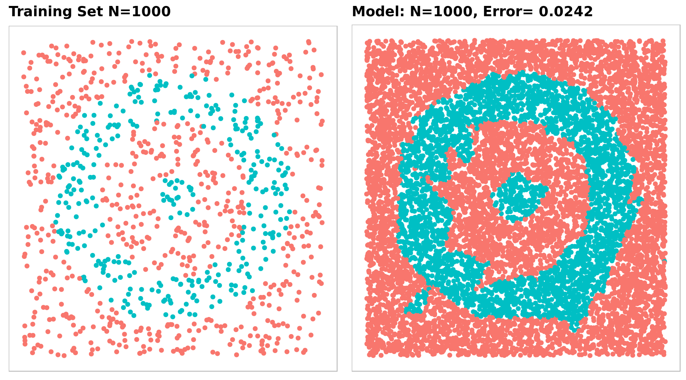
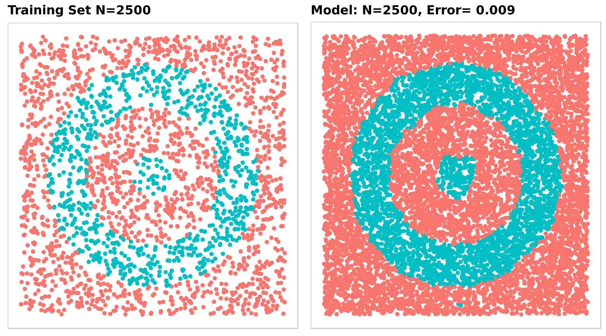
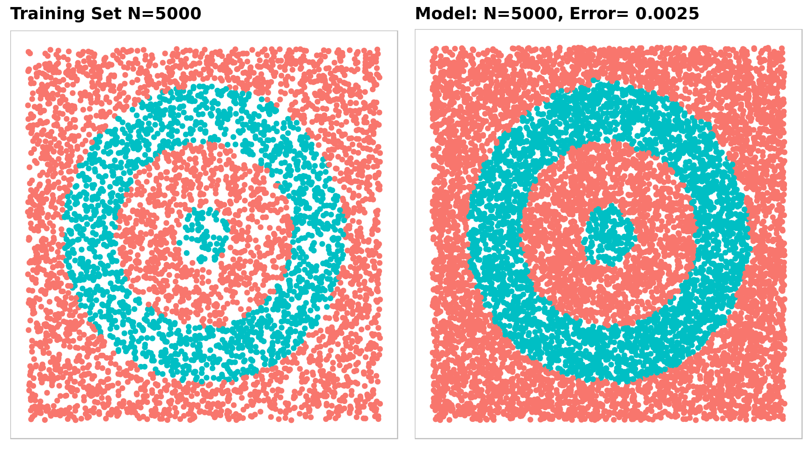

0.1 Neural Network
## Required Packages
library(neuralnet)
library(ggplot2)
library(nnet)
library(gridExtra)
## Set up parameters for the NN
n = 10000
size = 50
maxit = 500
## Generate Random Data fron the Uniform Distribution
set.seed(10)
x = runif(n, min = -1, max = 1)
y = runif(n, min = -1, max = 1)
dt = data.frame(x, y)
## Quick Plot of Data
qplot(x = x, y = y, geom = "point", data = dt, main = "Data Set")
## Calculate the distance to the origin
dt$dto = with(dt, sqrt(x^2 + y^2))
## Create a bullseye basid on distance to origin
dt$code = 0
dt$code[dt$dto < .8] = 1
dt$code[dt$dto < .5] = 0
dt$code[dt$dto < .15] = 1
## Code the indicator
dt$code2 = class.ind(dt$code)
## Create a custom plot theme
theme_jeb = function() {
theme(panel.background = element_blank(),
panel.border = element_rect(color = "gray", fill = NA),
panel.grid = element_blank(),
axis.text = element_blank(),
axis.ticks = element_blank(),
axis.title = element_blank(),
plot.title = element_text(face = "bold"))
}
## Main plot of the testing set
g1 = ggplot(dt, aes(x = x, y = y)) +
geom_point(aes(col = factor(code))) +
scale_color_discrete(guide = FALSE) +
ggtitle("Coded Data Set") +
theme_jeb()
g1
## Train the NN from 50 random samples of the data set
samp = sample(n, 50, replace = FALSE)
mdl = nnet(code2 ~ x + y, data = dt[samp,], size = size, softmax = TRUE,
maxit = maxit, trace = FALSE)
dt$out = factor(predict(mdl, dt, type = "class"))
g2 = ggplot(dt[samp, ], aes(x = x, y = y)) +
geom_point(aes(col = factor(code))) +
scale_color_discrete(guide = FALSE) +
ggtitle("Training Set N=50") +
theme_jeb()
g3 = ggplot(dt, aes(x = x, y = y)) +
geom_point(aes(col = out)) +
scale_color_discrete(guide = FALSE) +
ggtitle(paste("Model: N=50,", "Error=",
length(which(as.numeric(dt$out)-as.numeric(dt$code) == 0))/n)) +
theme_jeb()
grid.arrange(g2, g3, nrow = 1)
## 100 random samples
samp = sample(n, 100, replace = FALSE)
mdl = nnet(code2 ~ x + y, data = dt[samp,], size = size, softmax = TRUE,
maxit = maxit, trace = FALSE)
dt$out.100 = factor(predict(mdl, dt, type = "class"))
g4 = ggplot(dt[samp, ], aes(x = x, y = y)) +
geom_point(aes(col = factor(code))) +
scale_color_discrete(guide = FALSE) +
ggtitle("Training Set N=100") +
theme_jeb()
g5 = ggplot(dt, aes(x = x, y = y)) +
geom_point(aes(col = out.100)) +
scale_color_discrete(guide = FALSE) +
ggtitle(paste("Model: N=100,", "Error=",
length(which(as.numeric(dt$out.100)-as.numeric(dt$code) == 0))/n)) +
theme_jeb()
grid.arrange(g4, g5, nrow = 1)
## 500 random samples
samp = sample(n, 500, replace = FALSE)
mdl = nnet(code2 ~ x + y, data = dt[samp,], size = size, softmax = TRUE,
maxit = maxit, trace = FALSE)
dt$out.500 = factor(predict(mdl, dt, type = "class"))
g6 = ggplot(dt[samp, ], aes(x = x, y = y)) +
geom_point(aes(col = factor(code))) +
scale_color_discrete(guide = FALSE) +
ggtitle("Training Set N=500") +
theme_jeb()
g7 = ggplot(dt, aes(x = x, y = y)) +
geom_point(aes(col = out.500)) +
scale_color_discrete(guide = FALSE) +
ggtitle(paste("Model: N=500,", "Error=",
length(which(as.numeric(dt$out.500)-as.numeric(dt$code) == 0))/n)) +
theme_jeb()
grid.arrange(g6, g7, nrow = 1)
## 1000 random samples
samp = sample(n, 1000, replace = FALSE)
mdl = nnet(code2 ~ x + y, data = dt[samp,], size = size, softmax = TRUE,
maxit = maxit, trace = FALSE)
dt$out.1000 = factor(predict(mdl, dt, type = "class"))
g8 = ggplot(dt[samp, ], aes(x = x, y = y)) +
geom_point(aes(col = factor(code))) +
scale_color_discrete(guide = FALSE) +
ggtitle("Training Set N=1000") +
theme_jeb()
g9 = ggplot(dt, aes(x = x, y = y)) +
geom_point(aes(col = out.1000)) +
scale_color_discrete(guide = FALSE) +
ggtitle(paste("Model: N=1000,", "Error=",
length(which(as.numeric(dt$out.1000)-as.numeric(dt$code) == 0))/n)) +
theme_jeb()
grid.arrange(g8, g9, nrow = 1)
## 2500 random samples
samp = sample(n, 2500, replace = FALSE)
mdl = nnet(code2 ~ x + y, data = dt[samp,], size = size, softmax = TRUE,
maxit = maxit, trace = FALSE)
dt$out.2500 = factor(predict(mdl, dt, type = "class"))
g10 = ggplot(dt[samp, ], aes(x = x, y = y)) +
geom_point(aes(col = factor(code))) +
scale_color_discrete(guide = FALSE) +
ggtitle("Training Set N=2500") +
theme_jeb()
g11 = ggplot(dt, aes(x = x, y = y)) +
geom_point(aes(col = out.2500)) +
scale_color_discrete(guide = FALSE) +
ggtitle(paste("Model: N=2500,", "Error=",
length(which(as.numeric(dt$out.2500)-as.numeric(dt$code) == 0))/n)) +
theme_jeb()
grid.arrange(g10, g11, nrow = 1)
## 5000 random samples
samp = sample(n, 5000, replace = FALSE)
mdl = nnet(code2 ~ x + y, data = dt[samp,], size = size, softmax = TRUE,
maxit = maxit, trace = FALSE)
dt$out.5000 = factor(predict(mdl, dt, type = "class"))
g12 = ggplot(dt[samp, ], aes(x = x, y = y)) +
geom_point(aes(col = factor(code))) +
scale_color_discrete(guide = FALSE) +
ggtitle("Training Set N=5000") +
theme_jeb()
g13 = ggplot(dt, aes(x = x, y = y)) +
geom_point(aes(col = out.5000)) +
scale_color_discrete(guide = FALSE) +
ggtitle(paste("Model: N=5000,", "Error=",
length(which(as.numeric(dt$out.5000)-as.numeric(dt$code) == 0))/n)) +
theme_jeb()
grid.arrange(g12, g13, nrow = 1)